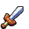
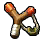

After being awoken from his nightmare, Navi informs Link on what he must do: to go see the Great Deku Tree. This did not come without hurdles though, first being recognized as having a fairy despite never having one in comparison to the rest of the Kokiri, but is also stopped by the self-proclaimed leader of the Kokiri, Mido, telling Link that if he's important, then why doesnt he have equipment? Through this Link acquires the Kokiri Sword and has to purchase a Deku Shield. After returning to Mido, he lets Link past to go speak to the Great Deku Tree. During this, the Great Deku Tree informs Link that he has been cursed by a wicked man and asks Link to venture inside of him to defeat the cause of his sickness. Link obliges and ventures inside of the Great Deku Tree, gathering various items to help him on his way and in his future: Deku Sticks and the Fairy Slingshot. After completing the dungeon that lied within the Great Deku Tree, Link finally saw the cause of the Great Deku Tree's sickness, a fearsome arachnid by the name of Gohma, but was met with a swift demise by Link who soon was presented the Kokiri Emerald for clearing the Great Deku Tree of his curse. However, that was not enough to save him, despite this he told Link on how the world was created: three golden goddesses named Farore, Nayru, and Din created different aspects of the world together and creating the Triforce as they left. He told Link to go to the castle and find the princess there within shortly before passing, Link would follow this without question and would proceed to leave Kokiri Forest, something that a Kokiri had never done before as they would die when leaving. As Link was leaving, he was stopped by one of his friends, Saria, and then given the Fairy Ocarina as a memento before leaving to the castle. Once across Hyrule Field and Castle Town, he would learn that access to Hyrule Castle would be difficult due to increased security after a recent break-in, despite this he would meet someone who would help with this problem, Malon. She gives Link an egg to take care of as he then tries to make his way around the guards without being noticed. When Link finds an entrance he could use to enter the castle with: a drain, he finds something in his way, Malon's father, Talon, in a deep slumber next to some boxes Link could use to better access the drain. After spending a night with the weird egg given by Malon, it hatches into a Cucco which Link would be able to wake up Talon with and send him on his way, soon getting access to the drain in the side of the castle. Once inside and passing through more guarded areas without being seen, he finally is able to meet with Princess Zelda. Zelda then tells Link about the dream she saw and that Link was the forest boy from it, asking Link to help her with the prophecy and gather the rest of the two Spiritual Stones after leaning that Link has the Kokiri Emerald, one of the Spiritual Stones. Zelda also expresses a sense of dread from a man that matches the appearance of the man who cursed the Great Deku Tree whom briefly appears in a window before giving Link a letter of her approval to climb Death Mountain. With this, Link meets Impa of the Shiekah, Zelda's attendant, taught the song of the royal family: Zelda's Lullaby, and then escorts Link out of the castle giving direction to Death Mountain.
| PICTURE | NAME | DESCRIPTION |
|---|---|---|
|  | Kokiri Sword | The first sword Link gains |
|
Deku Shield | The first shield Link gains, is flammable |
|
Deku Stick | Works like a torch, can burn fast |
|  | Falry Slingshot | Slingshot, takes Deku Seeds for ammo |
|
Kokiri Emerald | Kokiri Spiritual Stone |
|
Fairy Ocarina | Ocarina given by Saria |